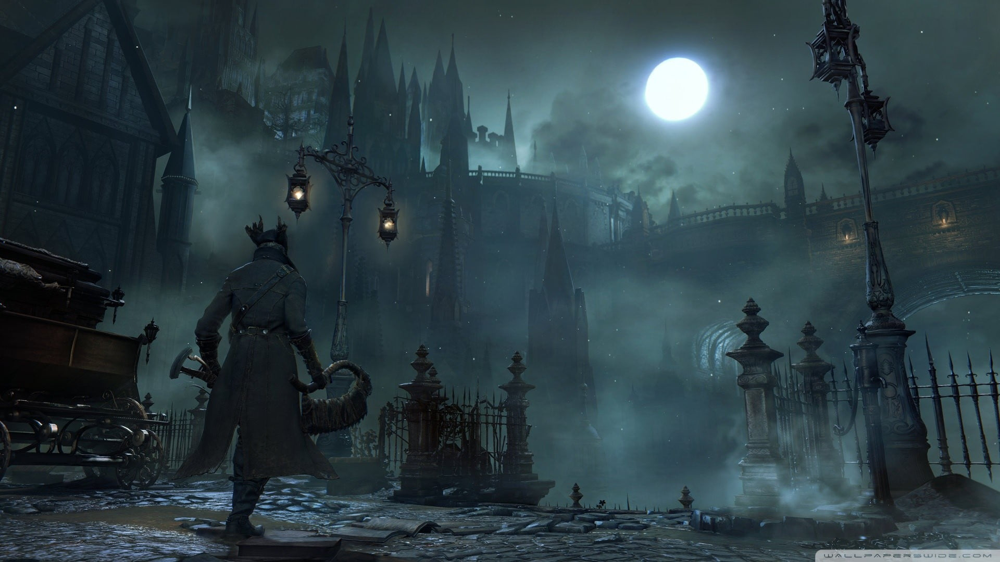

Armored Core
4 de agosto 2005El jugador toma el papel de un piloto de élite o Raven, el cual está a los mandos de un robot de combate llamado Amored Core, abreviado AC. El jugador tendrá que elegir a que facciones apoya seleccionando misiones
Armored 4
21 de diciembre 2006Ambientado en el futuro, donde una inminente gran guerra potencialmente dejara a las naciones de la tierra devastadas y sus respectivos gobiernos asumidos por las empresas.
Demon Souls
5 de febrero 2009En la antigüedad, debido al mal uso de la magia conocida como las Artes de Alma, Boletaria fue atacada por un ser llamado "El Anciano" y el mundo casi fue consumido por la "Niebla Profunda"
Dark Souls
22 de septiembre 2011RPG de acción en tercera persona, que se caracteriza por una atmósfera oscura y una dificultad muy por encima de los estándares actuales, jugabilidad desafiante, su atmósfera absorbente, sus controles prácticos y a su innovador modo multijugador.
Dark Souls II
11 de marzo 2014Videojuego de rol de acción que tiene lugar en un mundo inmensamente más grande que en Dark Souls, aunque la densidad del contenido se encuentra más diluida y también le da al jugador más libertad para elegir cómo avanzar.
Bloodborne
24 de marzo de 2015Historia de un cazador que llega a yharnam un pueblo infectado por una enfermedad sanguinea que convierte a los habitantes en bestias.
Dark Souls III
11 de abril 2016Dark Souls 3 es el final de la saga y presenta un mundo, el Reino de Lothric, al borde del Apocalipsis por culpa de "la maldición de los no muertos".
Deracine
6 de noviembre 2018El jugador controla a una fuerza espiritual invisible, una especie de hada que debe resolver puzles en lo que parece ser un instituto, hay seis niños que estudian ahí. Déraciné es en una historia profunda, el jugador debe entender el vínculo entre el hada, el instituto y los niños
Sekiro
22 de marzo 2019En un reinventado período Sengoku de finales del siglo XVI en Japón, el señor de la guerra Isshin Ashina organizó un golpe sangriento y tomó el control de la tierra de Ashina del Ministerio del Interior.
Elden Ring
25 de febrero 2022El juego es una colaboración entre el director del juego Hidetaka Miyazaki y el novelista de fantasía George R. R. Martin. Durante el evento Summer Game Fest.